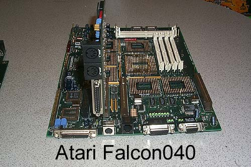

The Atari Falcon030
"Personal Integrated Media
System"

The Atari Falcon030
"Personal Integrated Media
System"
Atari's final computer product. The Atari Falcon030 Computer
system. Released in late 1992 and canceled in 1993 as Atari
regeared itself to focus completely on the release and support of its newest
product, the Atari Jaguar 64 Interactive Multimeadia System.
The Atari Falcon030 packed an array of powerful features. Unfortunately
one of the drawbacks was that all the features were packaged into the same
old tired 1040ST case and not something more along the lines of the Mega
STe or TT030 case.

Atari had been preparing a new highend Atari Falcon, the 040 with expansion slots, Motorola 68040 procosser, and much more. It made it to prototyping stages and several cards were designed for its expansion slots. Although the expansion slots are PCI-type, they most likely were not actual PCI, but it is unknown. The prototype shown it missing many key chips and is not functional.

{kind=link}